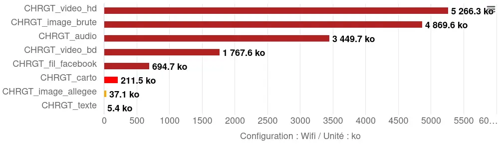
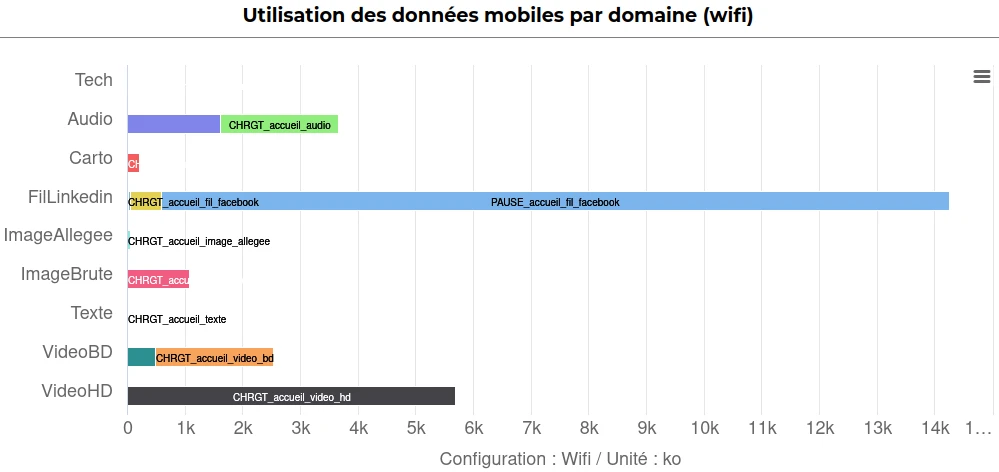
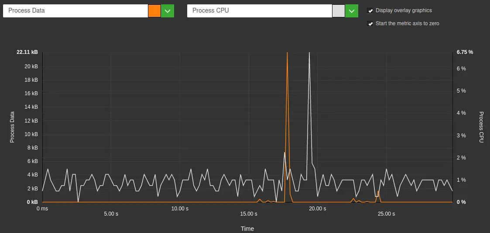
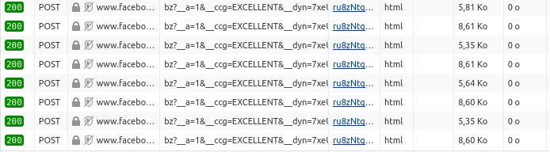
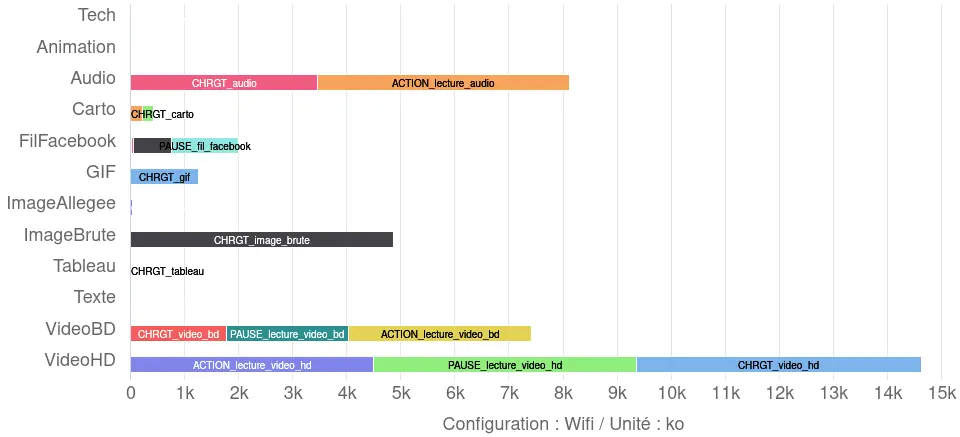

Il y a de cela quelques années déjà, j’ai eu la chance de participer à la conception du MOOC de l’INRIA sur les impacts (entre autres environnementaux) du numérique. À cette occasion, une activité avait été créée par Benjamin Ninassi, dans le but de permettre au participant de classer les éléments d’une page web en fonction de leur poids. L’intérêt ici est notamment d’aider les participants à constituer leur propre modèle mental de ce qui constitue une page web et des impacts respectifs de chaque élément qui la compose. Il s’agit là d’une étape essentielle lorsque l’on veut se pencher sur l’écoconception web. C’est d’ailleurs pour cela que j’utilise régulièrement cette activité en formation mais aussi pour sensibiliser à la sobriété éditoriale.
L’objectif premier de cet article est de valider le classement proposé dans cette activité par de la mesure mais aussi d’aller plus loin. Cet article a été réalisé en collaboration avec l’INRIA (merci Benjamin !) et l’activité du MOOC sera modifiée en conséquence prochainement.
Méthodologie
Afin de pouvoir mesurer les différents éléments qui constituent une page web, nous avons commencé par créer une page HTML/CSS aussi basique que possible qui sert de référence pour les mesures. Cette page a un fond entièrement noir. Ensuite, nous avons décliné cette page en autant de versions qu’il y a d’éléments à mesurer. Pour chaque élément à mesurer, une page HTML est donc créée à partir de cette page de référence, à laquelle on ajoute seulement l’élément à mesurer. Le CSS est créé dans un fichier à part, renseignant à minima le fond entièrement noir. Ce fichier n’est pas minifié (suppression des caractères non-nécessaires à l’interprétation du code) car l’apport sur un fichier aussi court est négligeable.
Ensuite, un parcours simple est automatisé en GDSL (le langage d’automatisation de Greenspector) afin de simuler le comportement standard d’un utilisateur, basé sur une utilisation standard du composant mesuré (voir plus loin). Ensuite, une fois les mesures réalisées sur le banc de mesure, nous procédons à la génération d’un dashboard et à la projection environnementale. Ce sont ensuite ces résultats que nous utilisons pour analyser les impacts des différents éléments mesurés et les classer.
Concernant les médias intégrés dans la page à titre d’exemple pour la mesure, nous avons autant que possible repris les éléments utilisés dans l’activité du MOOC. Cette dernière proposait à l’origine un fil Twitter qui apparaît depuis vide. Avec l’INRIA, il a été décidé de le remplacer par un fil Facebook (celui de l’INRIA) à la fois dans l’activité et dans l’échantillon mesuré ici.
Nous avons ici pris le parti de mesurer les éléments choisis en fonction de l’usage qui en est fait :
- Image (brute et allégée), animation (CSS), image animée (GIF) : chargement et pause
- Fichier audio, vidéo (BD et HD) : chargement, pause, lecture
- Fil Facebook, tableau, texte : chargement, pause, scroll, pause
- Carte interactive : chargement, pause, zoom, pause
L’idée générale est d’aller au-delà du simple chargement de la page pour refléter ce qu’en font les utilisateurs mais aussi d’aller vers d’autres métriques liées aux impacts environnementaux.
Les mesures ont été effectuées sur Samsung Galaxy S9, en WIFI.
Différentes hypothèses ont été prises pour la projection environnementale :
- 100 % des utilisateurs et serveurs localisés en France
- Répartition des terminaux utilisateurs (source : https://datareportal.com/reports/digital-2023-france [EN]) :
- 50% sur smartphone
- 3 % sur tablette
- 47 % sur PC
La méthodologie pour la projection environnementale est décrite dans cet article dédié.
Classement des éléments d’une page en fonction leur poids
Attention, cet article contient des spoilers. En effet, il se base sur le résultat attendu pour l’activité “Comparer le poids des éléments d’une page web”. Si vous n’avez pas encore fait cette activité, faites-la dès maintenant.
Dans l’activité du MOOC, le classement proposé est le suivant (du composant ayant le poids le plus élevé à celui ayant le poids le plus faible) :
- Vidéo Haute Définition
- Vidéo Basse Définition
- Podcast audio
- Image Brute
- Carte OpenStreetMap
- Un fil de réseau social
- Image allégée
- Texte seul
A l’issue des mesures que nous avons effectuées, les données transférées lors du chargement des pages correspondantes donnent les résultats suivants :

On retrouve donc plus ou moins le classement proposé dans l’activité avec quelques écarts liés aux contenus choisis pour chaque catégorie. Il convient en effet de noter que le poids de ces éléments dépend de plusieurs facteurs et en particulier du réseau social sélectionné ainsi que du contenu intégré ici (message, fil de messages, etc). Il en va de même pour les autres éléments mesurés ici mais l’ordre de grandeur reste donc tout à fait correct.
Nous pouvons donc ici valider le classement du poids des éléments tel que proposé dans l’activité du MOOC de l’INRIA. Nous pourrions tout à fait nous arrêter ici mais voyons maintenant pour aller plus loin. Pour cela, regardons ce qui se passe au-delà du chargement de la page ainsi que d’autres métriques et indicateurs.
Autres impacts des éléments d’une page web
Nous restons donc sur les huit éléments proposés dans l’activité.
Le dashboard généré via Greenspector Studio liste plusieurs autres métriques et indicateurs.
Le premier score calculé concerne la performance. Toutefois, sur des pages aussi légères, le chargement est trop rapide pour qu’on puisse différencier les éléments de façon significative en raison du “bruit”, notamment le TTFB (Time to First Byte = délai avant réception du premier élément) qui peut légèrement varier d’une itération à l’autre.
Données transférées au-delà du chargement initial
Commençons par regarder les données transférées au-delà du chargement de la page : pause de 30 secondes, scroll en bas de la page puis nouvelle pause de 30 secondes.

On constate ici que les données transférées en-dehors du chargement ne sont la plupart du temps pas négligeables. En particulier, dans le cas de la lecture de vidéo et d’audio (comme on pourrait s’en douter) mais aussi pour le fil Facebook.
Énergie consommée
Sur l’ensemble des étapes mesurées, l’énergie consommée en fonction des éléments est la suivante :

On constate que l’ordre reste globalement cohérent à quelques exceptions près (nous y reviendrons plus tard) mais surtout le fil Facebook qui, bien que moins impactant que la vidéo, l’est davantage que les autres éléments (notamment le lecteur audio).
Fil Facebook
La page contenant le fil Facebook est parmi les plus impactantes du point de vue de l’énergie. S’il est logique que le scroll et le chargement soient impactants (car ces étapes impliquent à minima une modification de l’affichage), c’est tout de suite plus étonnant pour les pauses. En effet, lorsque l’utilisateur est inactif, l’affichage n’est normalement pas modifié. Il reste donc à regarder si des requêtes “parasites” surviennent. Dans l’interface web de Greenspector Studio, on obtient la représentation suivante :

Sur une étape de pause “normale”, aucun transfert de données n’a lieu (en-dehors d’éventuelles requêtes liées à la télémétrie du navigateur Chrome). Si, en plus, l’affichage n’est pas modifié, on s’attend à voir une sollicitation CPU stable et basse et aucune donnée transférée. Ce n’est pas le cas ici. En-dehors d’un pic fort de CPU, corrélé à du transfert de données, les pics CPU semblent plutôt être de l’ordre du tracking.

Lors de l’intégration d’un contenu provenant d’un service externe, il est courant que des requêtes soient émises à intervalles réguliers vers le site source pour l’informer du comportement utilisateur et des interactions avec le contenu intégré. On le voit ici dans le cas de Facebook mais sachez que la plupart des réseaux sociaux procèdent ainsi (à ce propos, je vous recommande de tester l’intégration d’un contenu Linkedin…).
Vous pouvez à ce sujet consulter l’article dédié à l’intégration de services tiers sur une page web : /ressources/blog/service-tiers-youtube/
Différences de consommation énergétique pour les contenus
Le texte apparaît plus impactant pour l’énergie que la carte interactive ou les images. Tous ces contenus ne provoquent pas de changement de l’affichage une fois chargés et juste visualisés. En revanche, sur un écran AMOLED (comme celui du S9 utilisé ici), l’affichage du texte est plus impactant que les images et la carte interactive choisis car le fond est noir mais le texte blanc. Sur ce type d’écran (et c’est la raison d’être du mode sombre du point de vue de la consommation d’énergie), un pixel noir est beaucoup moins coûteux à afficher qu’un pixel blanc. Nous sommes donc ici sur un cas limite mais qui permet de comprendre d’où provient l’impact d’une page en consultation seule.
Vous pouvez à ce sujet consulter l’article dédié à l’impact de la couleur sur la consommation énergétique : /ressources/blog/faut-il-changer-son-fond-decran-pour-consommer-moins-de-batterie/
Conclusion intermédiaire
Pour les éléments de l’activité du MOOC, la mesure des données transférées vient confirmer le classement attendu, avec seulement un léger bémol lié au contenu de réseau social intégré (qui apparaît plus impactant que la carte interactive).
Toutefois, si on regarde plutôt l’énergie consommée, on constate qu’une bonne partie de l’impact du fil Facebook intervient après le chargement, via des requêtes régulières à des services tiers. Ceci souligne la nécessité d’aller au-delà de la mesure des requêtes, données transférées et du DOM mais aussi de mesurer ce qui se passe après le chargement initial, au risque de passer entre autres à côté des services tiers (et des éléments dont le chargement est différé, souvent pour des raisons de performance). Aussi, il s’agit là (au risque d’insister) d’être au plus proche du comportement des utilisateurs.
Voyons maintenant pour ajouter à la liste initiale de nouveaux éléments qu’on trouve souvent sur le web.
Autres éléments intégrés dans une page web
En complément des éléments proposés dans l’activité du MOOC, nous nous sommes penchés sur d’autres items :
- GIF animé
- Animation CSS (du texte simple animé pour arriver progressivement à l’écran par la droite, en boucle infinie) en s’appuyant sur un exemple basique issu de MDN : https://developer.mozilla.org/fr/docs/Web/CSS/CSS_Animations/Using_CSS_animations
- Tableau HTML natif
La méthodologie de mesure et création des pages de l’échantillon est exactement la même que celle exposée plus haut.
Voyons ici les résultats obtenus.
Données transférées lors du chargement initial
A l’issue des mesures que nous avons effectuées, les données transférées lors du chargement des pages correspondantes donnent les résultats suivants :

En complément du classement constaté plus haut pour les éléments issus de l’activité, on note le GIF, assez volumineux en soi (même si cela dépend une fois de plus de l’élément choisi).
Le tableau est moins volumineux que le texte car il contient moins de caractères (moins de phrases de contenu factice ont été introduites dans le tableau que dans la page servant à mesurer l’impact du texte seul). Nous verrons plus loin que la surconsommation, dans le cas du tableau, est ailleurs. L’animation apparaît ici plutôt légère (quelques lignes de HTML et de CSS).
A noter que les éléments ajoutés ici n’entraînent pas de transferts de données additionnels au-delà de l’étape de chargement initial.

Énergie consommée
Les résultats obtenus ici sont les suivants :

Lorsque l’on se limitait aux éléments de l’activité du MOOC, nous avions constaté quelques différences avec le classement initialement proposé. En particulier, le fil Facebook se démarquait nettement comme le plus impactant du point de vue de l’énergie.
Ici, on remarque que l’animation CSS est de loin la plus impactante du point de vue de l’énergie. Après les vidéos, on trouve le fil Facebook puis l’image animée. Cet ordre est notable : en effet, contrairement au GIF animé qui modifie en continu l’affichage, le fil Facebook apparaît plutôt statique lorsque l’utilisateur est inactif. Comme évoqué précédemment, sa surconsommation d’énergie vient plutôt de ce qui ne se voit pas : les requêtes à destination de Facebook et le préchargement des vidéos.
Le tableau HTML natif est légèrement plus impactant que le texte simple du point de vue de l’énergie, même s’il contient moins de caractères. Ainsi, dès l’affichage, le tableau sollicite légèrement plus le CPU (nous y reviendrons plus loin).
Ceci avait déjà été évoqué dans le cadre de l’article sur les sites sobres : /ressources/blog/un-site-sobre-est-il-necessairement-moche/
Lorsqu’un élément sur une page entraîne des modifications en continu ou presque de l’affichage, l’impact énergétique peut être conséquent. Nous verrons dans la dernière partie de cet article en quoi ceci influe sur les impacts environnementaux.
Conclusion intermédiaire
Les trois éléments ajoutés s’intègrent sans surprise au classement initial si l’on s’en tient aux données transférées. Toutefois, du point de vue de l’énergie, l’animation CSS et le GIF animé ont un impact considérable. Ceci souligne une fois de plus la nécessité, pour de la mesure, de ne pas se limiter aux requêtes HTTP, données transférées et au DOM. L’utilité de cette dernière métrique pour la projection environnementale reste discutable. Les cas présentés ici sont d’ailleurs de bonnes illustrations de cas où le DOM est très léger mais où les impacts sont très importants.
Ceci est détaillé dans un autre article du blog : /ressources/blog/le-dom-comme-metrique-de-suivi-de-sobriete-du-web/
Pour finir, nous allons utiliser une autre méthodologie de mesure et collecter des données afin d’avoir une vision plus globale des différents éléments.
Mesure des pages via un benchmark “classique”
Pour cette nouvelle série de mesures, nous sommes partis du même échantillon de pages mais avons utilisé un benchmark classique. Ainsi, chaque page est mesurée sur une durée de 70s, en utilisant les étapes suivantes :
- Le chargement de la page
- Une étape de pause avec la page affichée au premier plan
- Une étape de pause avec la page affichée à l’arrière-plan
- Le scrolling sur la page
Pour en savoir plus sur le benchmark, consultez cette page : /ressources/blog/comment-est-calcule-lecoscore-dans-le-cas-dun-benchmark-web-ou-mobile/
Il en ressort les résultats suivants :

Pour ce qui est des données transférées, on retrouve ce qui a déjà été observé. Sachant qu’il est plus difficile de départager l’animation CSS, le texte et le tableau HTML car les quantités de données transférées sont très faibles.
Pour ce qui est du CPU, on note quelques légères variations mais surtout les surconsommations pour l’animation CSS, le GIF et le fil Facebook sont d’autant plus claires. À la suite de ce trio de tête, on trouve le tableau HTML qui, malgré la faible quantité de données nécessaires à son chargement, s’avère être impactant pour le CPU.
De son côté, Alexander Dawson a commencé à creuser la question de l’impact de différents éléments standard HTML et CSS : https://websitesustainability.com/cache/files/research23.pdf [PDF de 384 ko, EN].
Pour les requêtes HTTP, on retrouve sans surprise en tête le fil Facebook (de loin) et la carte OpenStreetMap. Il s’agit en effet ici de l’intégration d’éléments dynamiques fournis par des services-tiers, ce qui nécessite davantage de fichiers pour fonctionner. A noter que les requêtes vers et depuis Facebook se font en continu ou presque, jusqu’à atteindre plus de 170 requêtes en tout au bout de quelques minutes d’inactivité de l’utilisateur (comme nous avons pu l’évoquer plus haut).
Concernant les équivalents en émissions de gaz à effet de serre, l’animation et l’image animée sont les plus impactants, suivis par le fil Facebook (en raison de sa forte consommation de données et de CPU). À titre indicatif, l’occupation des sols ainsi que l’eau sont également indiquées (voir à ce propos l’article sur la projection environnementale : /ressources/blog/methodologie-calcul-empreinte-environnementale/ ). Le classement pour ces deux autres indicateurs, reste globalement identique.
Conclusion intermédiaire
Ces nouvelles mesures, avec une méthodologie légèrement différente, soulignent une fois de plus la nécessite de prendre en compte différentes métriques mais aussi les écarts observables lors de l’évaluation sur plusieurs indicateurs environnementaux.
Conclusion globale
Si l’on reste sur le même périmètre (données transférées lors du chargement initial), les mesures confirment le classement des éléments proposé par l’activité du MOOC de l’INRIA. Le seul point à discuter reste l’intégration d’un élément de réseau social. Sur l’échantillon choisi ici, l’intégration du fil Facebook est plus impactante que la carte interactive issue d’OpenStreetMap (sans même compter les autres impacts identifiés au-delà du chargement initial ou les données liées à l’énergie).
Si l’on va au-delà de ce périmètre de mesure (en regardant également d’autres métriques et indicateurs environnementaux), le classement peut être amené à changer, en particulier à cause des impacts au niveau de l’énergie consommée.
Enfin, l’ajout de nouveaux éléments intégrables sur une page web vient forcément modifier le classement mais permet surtout d’affiner le modèle mental évoqué en introduction du présent article. En particulier, l’animation CSS et le GIF animé (ainsi que le tableau HTML dans une moindre mesure) soulignent l’impact sur des métriques qui ne sont aujourd’hui pas mesurées par la plupart des outils alors qu’elles ont un rôle prépondérant pour les impacts environnementaux. Par exemple, l’impact du CPU sur la décharge de batterie du terminal peut entraîner l’accélération à terme du renouvellement de celui-ci donc les impacts environnementaux majeurs liés à cette opération. Ce constat remet directement en question le modèle mental largement adopté pour les impacts environnementaux du numérique qui conduit certains à “compenser” la diète qu’ils s’imposent sur les données transférées par la mise en place d’animations. Par extension, ceci rejoint notamment les questionnements sur l’impact des différents formats et codecs pour certains contenu (où la réduction de poids peut être compensée par une surcharge de calcul qui vient réduire voire annuler les gains environnementaux).
Même s’il est normal de commencer avec un modèle mental simple, cet article vise également à souligner la nécessité d’affiner celui-ci afin d’avoir tous les éléments en main pour effectuer des choix éclairés. En espérant que certains des résultats présentés ici y contribuent.
En conclusion, deux classements sont proposés ici.
Le premier ne s’appuie que sur les données transférées lors du chargement initial, comme prévu initialement dans l’activité (du moins impactant au plus impactant) :
- Tableau
- Texte
- Animation
- Image allégée
- Carte interactive
- Intégration d’un contenu de réseau social
- GIF animé
- Fichier audio
- Vidéo basse définition
- Image brute
- Vidéo haute définition
Le deuxième classement s’appuie directement sur la projection en termes d’émissions de gaz à effet de serre sur l’ensemble des étapes de mesure (ce qui implique de revenir aux métriques pour expliquer mais aussi d’être transparent sur le modèle de projection environnementale) :
- Texte
- Tableau
- Image allégée
- Carte interactive
- Fichier audio
- Image brute
- Vidéo basse définition
- Vidéo haute définition
- Intégration d’un contenu de réseau social
- GIF animé
- Animation